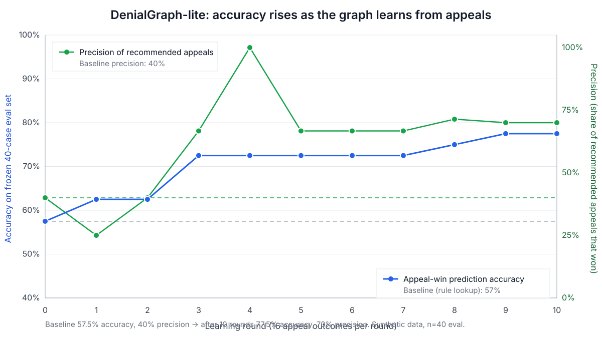

Patient-first claim denial appeals, on a self-improving graph. HydraDB Hackathon — Track 1: the self-improving graph. Built on SelfGraph + HydraDB. All data here is synthetic — no real PHI.
Paste the letter (or EOB) your insurer sent you. We pull out the payer, procedure code, and denial reason, walk the graph, and tell you why it was denied — and what actually wins appeals for cases like yours.
One thing to attach:
Your appeal draft — edit it directly below, or use the revise buttons. Each button revises the current draft, so they stack: Shorter, then Firmer, then Reset to start over. Re-analyzing regenerates the draft from scratch.
Frozen 40-case eval set, never used for training. Baseline = payer rule lookup (the static-rules approach). Each learning round ingests 16 more appeal outcomes: edge reweighting on wins/losses, path compression of frequent denial chains, and gap-driven questions for the one missing document.

baseline accuracy accuracy after 10 rounds appeal precision appeals filed (eval set)
Patient-first read: the learned graph recovers about the same money as the rule lookup ( on the eval set) while filing half as many appeals — precision 40% → 70%. Fewer wasted appeals is the win for a patient: each losing appeal costs time, postage, and phone calls.
src/cypher.py. SelfGraph's HydraDBStore needs HydraDB ≥ 0.4.0 — v0.4.0 shipped Nov 14, 2026, and ghcr.io/hydra-db/hydradb:0.4.0 exists.src/ingest_selfgraph.py.Honest status: SelfGraph + embedded Kuzu is verified working end-to-end here (200 letters ingested, 385 entities, 291 relations, retrieval + answerability checks pass). A live HydraDB 0.4.0 server was not run in this sandbox — no Docker, no Rust toolchain, and apt stalled — so the Cypher in src/cypher.py is written to the docs and unexecuted. See HYDRA_FINDINGS.md for the full verification log.